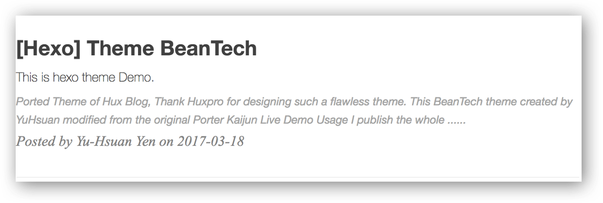

[Hexo] Theme BeanTech
Ported Theme of Hux Blog, Thank Huxpro for designing such a flawless theme.
This BeanTech theme created by YuHsuan modified from the original Porter Kaijun

Usage
I publish the whole project for your convenience, so you can just follow the instruction down below, then you can easily customiz your own blog!
Let’s begin!!!
Init
git clone https://github.com/YenYuHsuan/hexo-theme-beantech.git ./hexo-beantech
cd hexo-beantech
npm install
Modify
Modify _config.yml file with your own info.
Especially the section:
Deployment
Replace to your own repo!
deploy:
type: git
repo: https://github.com/<yourAccount>/<repo>
branch: <your-branch>
Copy your avatar image to <root>/img/ and modify the _config.yml:
sidebar: true # whether or not using Sidebar.
sidebar-about-description: "<your description>"
sidebar-avatar: img/<your avatar path>
and activate your personal widget you like
widgets: # here are widget you can use, you can comment out
- featured-tags
- short-about
- recent-posts
- friends-blog
- archive
- category
if you want to add sidebar widget, please add at layout/_widget.
Signature Setup
Copy your signature image to <root>/img/signature and modify the _config.yml:
signature: true # show signature
signature-img: img/signature/<your-signature-ID>
Go to top icon Setup
My icon is using iron man, you can change to your own icon at css/image.
Post tag
You can decide to show post tags or not.
home_posts_tag: true

home_posts_tag: false

Markdown render
My markdown render engine plugin is hexo-renderer-markdown-it.
# Markdown-it config
## Docs: https://github.com/celsomiranda/hexo-renderer-markdown-it/wiki
markdown:
render:
html: true
xhtmlOut: false
breaks: true
linkify: true
typographer: true
quotes: '“”‘’'
and if you want to change the header anchor ‘ℬ’, you can go to layout/post.ejs to change it.
async("https://cdn.bootcss.com/anchor-js/1.1.1/anchor.min.js",function(){
anchors.options = {
visible: 'hover',
placement: 'left',
icon: ℬ // this is the header anchor "unicode" icon
};
Hexo Basics
Some hexo command:
hexo new post "<post name>" # you can change post to another layout if you want
hexo clean && hexo generate # generate the static file
hexo server # run hexo in local environment
hexo deploy # hexo will push the static files automatically into the specific branch(gh-pages) of your repo!
Have fun ^_^
Please Star this Project if you like it! Follow would also be appreciated!
Peace!
Original author: Cobb
Original link: http://wzwdi.cn/uncategorized/cjsshrngh0002sa46rfyonko0/hexo-theme-beantech/
Copyright Notice: Please indicate the source of the reprint (must retain the author's signature and link)